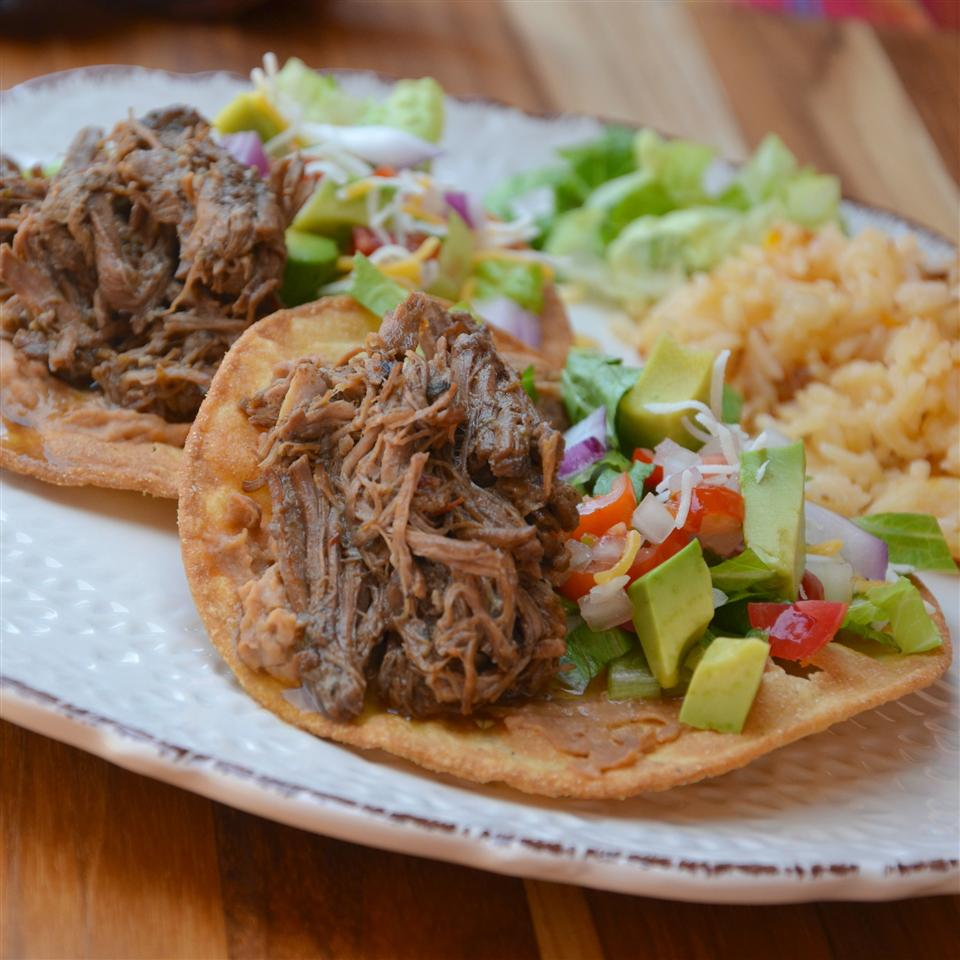

Barbacoa-Style Shredded Beef

Barbacoa-Style Shredded Beef
If beef tacos make you think of ground beef and lots of seasoning,
you have to give barbacoa a try. Traditionally, a whole goat or
sheep is buried in an underground oven and slowly cooked overnight.
Modern versions use beef cuts like chuck roast and are braised in
the oven or cooked in the slow cooker. This Barbacoa-Style Shredded
Beef uses the slow cooker. The result is so tender you could pull the
meat apart with a fork. Pile onto tacos, tostadas, or burritos.
Ingridients
- 2 tablespoons vegetable oil
- ½ cup beef broth
- ¼ cup apple cider vinegar
- ¼ cup fresh lime juice
- 4 chipotle peppers in adobo sauce, chopped
- 5 cloves garlic, chopped
- 1 tablespoon ground cumin
- 1 tablespoon dried oregano
- ¼ teaspoon ground cloves
- 3 bay leaves
Steps
- Season beef chunks with salt and pepper on all sides.
- Heat oil in a large skillet over medium-high heat. Add beef in batches; cook until browned, about 1 minute per side. Transfer beef to a slow cooker.
- Combine beef broth, apple cider vinegar, lime juice, chipotle peppers, garlic, cumin, oregano, and cloves in a bowl. Season with salt and pepper and mix well. Pour over beef in the slow cooker. Stir in bay leaves.
- Cook on Low until beef is fork-tender, 8 to 10 hours.
- Discard bay leaves. Remove beef and shred using 2 forks. Return beef to the slow cooker to marinate in the sauce for at least 10 more minutes before serving.